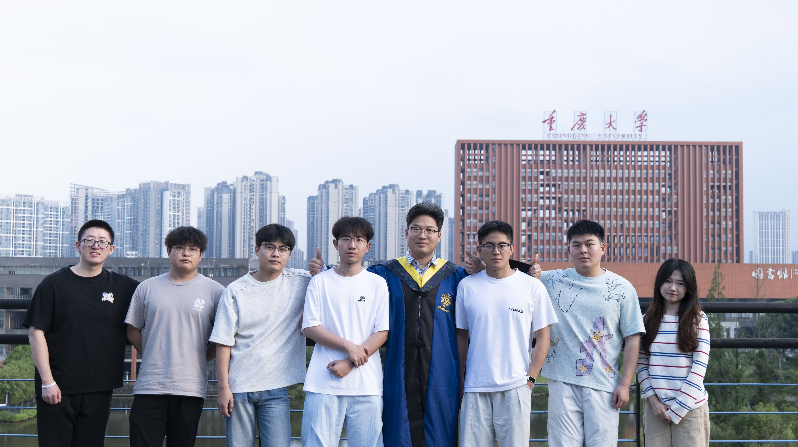
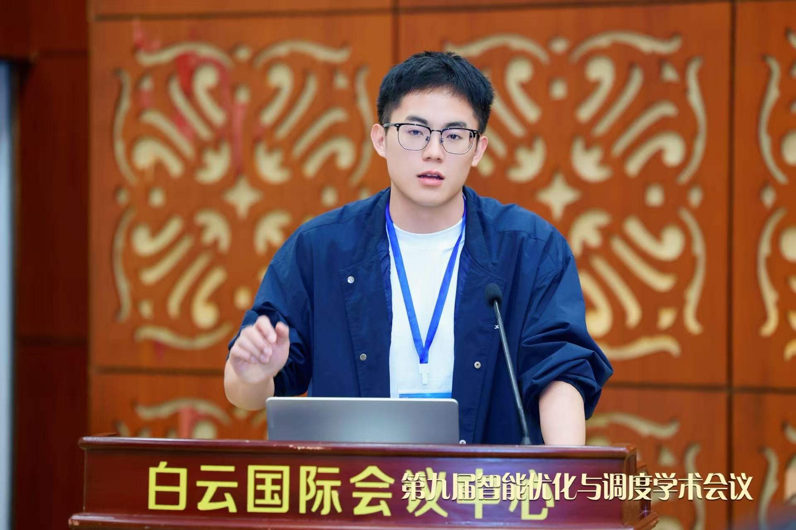
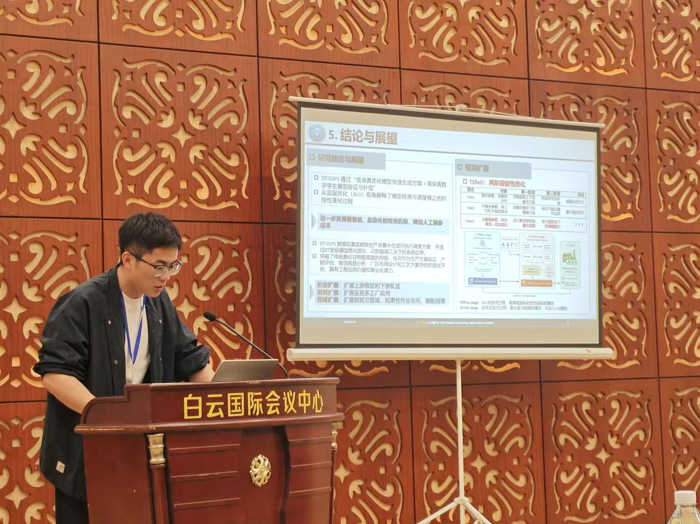
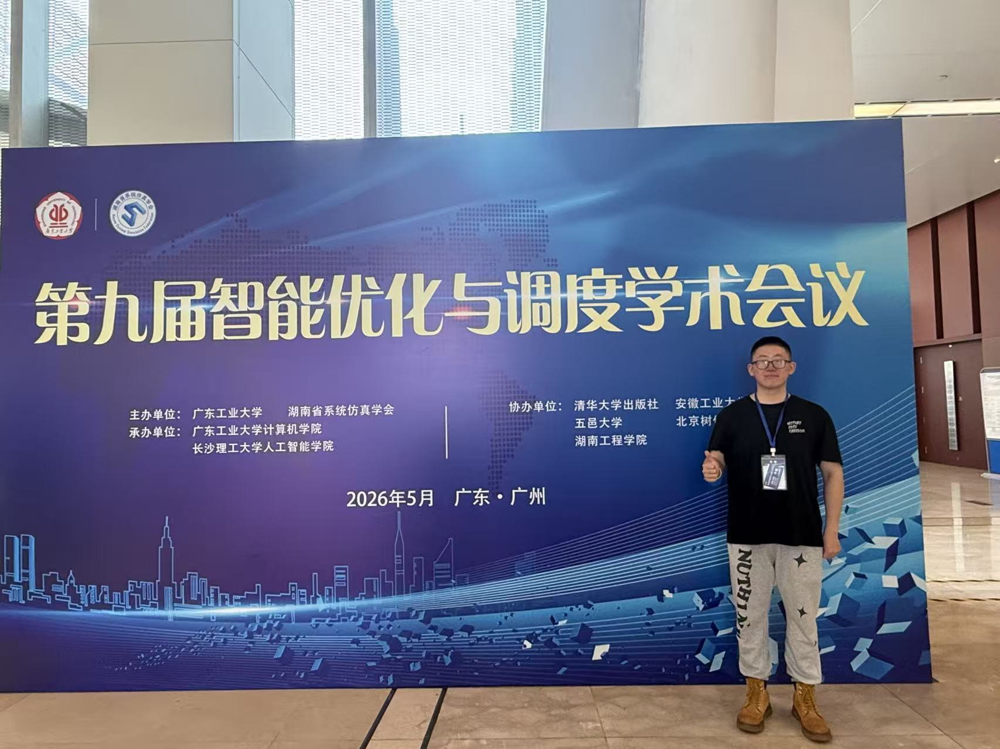
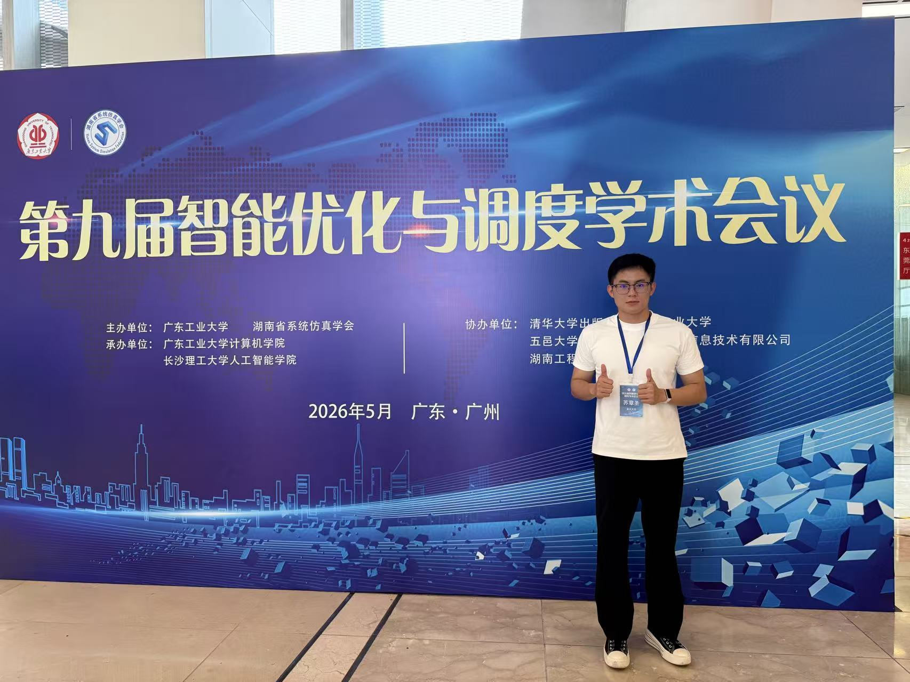

课题组新闻
2026年（6）
- 毕业喜讯课题组2023级硕士研究生孙禄冰顺利毕业

毕业合影 - 科研项目课题组与清华大学达成合作研究科研项目：清华大学合作科研项目“面向端到端智驾模型的图形化闭环仿真与场景生成系统开发”正式启动
- 联合培养课题组张富均、皮景升获得清华大学智能绿色车辆与交通全国重点实验室联合培养资格
- 学术会议苏章圣与蒋卓隽参加第九届智能优化与调度学术会议，并作题为 DT-SOPS: A digital twin-based scheduling optimization system to bridge the model-reality gap with a case study in the steelmaking industry 的报告

会议报告 
报告现场 
蒋卓隽参会 
苏章圣参会 - 期刊论文罗庆暄在 Swarm and Evolutionary Computation 期刊发表论文 《A Data-Driven Multi-objective Differential Evolution Framework for Charging-Thermal Coupled Parameter Optimization in Rotary Hearth Furnace Operations》
- 合作交流课题组与澳大利亚Raymond Chiong教授达成合作意向，将在智能优化算法及其应用领域展开深入合作研究
2025年（4）
- 竞赛获奖罗庆暄、苏章圣、孙禄冰参加"华为杯"第二十二届研究生数学建模竞赛并荣获全国三等奖
- 期刊论文苏章圣在 控制理论与应用 发表论文 《基于分层强化学习的天车调度优化方法》
- 会议论文孙禄冰参加The 44th Chinese Control Conference (CCC) 并发表论文 《A Learning-based Multi-Objective BRKGA for Steelmaking-Continuous Casting Scheduling with Transportation Thresholds》
- 会议论文罗庆暄参加The 10th International Congress on the Science and Technology of Steelmaking 并发表论文 《An XGBoost-Based Model for Temperature Prediction in Rotary Hearth Furnaces: Incorporating Mechanistic and Temporal Factors》
2023年（1）
- 期刊论文陈兰在 国际高水平期刊 Journal of Manufacturing Systems (JMS, 中科院一区) 期刊发表论文 《A knowledge-based NSGA-II algorithm for multi-objective hot rolling production scheduling under flexible time-of-use electricity pricing》